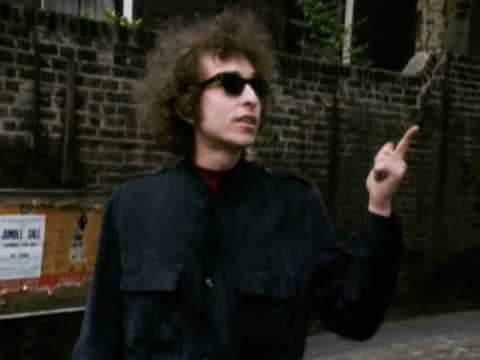

Obviously, death is not very universally accepted. I mean, you'd think that the traditional music people could gather from their songs that mystery is a fact, a traditional fact.
I think one can hear what Bob Dylan was talking about in the music of "The Basement Tapes," in "Goin' To Acapulco," "Tears Of Rage," "Too Much Of Nothing," and "This Wheel's On Fire" -- one can hardly avoid hearing it. It is a plain-talk mystery; it has nothing to do with mumbo-jumbo, charms or spells. The "acceptance of death" that Dylan found in "traditional music" -- the ancient ballads of mountain music -- is simply a singer's insistence on mystery as inseparable from any honest understanding of what life is all about; it is the quiet terror of a man seeking salvation who stares into a void that stares back. It is the awesome, impenetrable fatalism that drives the timeless ballads first recorded in the twenties; songs like Buell Kazee's "East Virginia," Clarence Ashley's "Coo Coo Bird," Dock Boggs' "Country Blues" -- or a song called "I Wish I Was A Mole In The Ground," put down by Bascom Lamar Lunsford in 1928. "I wish I was a mole in the ground -- like a mole in the ground I would root that mountain down -- And I wish I was a mole in the ground." Now, what the singer wants is obvious, and almost impossible to really comprehend. He wants to be delivered from his like, and to be changed into a creature insignificant and despised; like a mole in the ground, he wants to see nothing and to be seen by no one; he wants to destroy the world, and to survive it. Dylan and The Band came to terms with feeling -- came to terms with the void that looks back -- in the summer of 1967; in the most powerful and unsettling songs on "The Basement Tapes," they put an old, old sense of mystery across with an intensity that has not been heard in a long time. You can find it in Dylan's singing and in his lyrics on "This Wheel's On Fire" -- and in every note Garth Hudson, Richard Manuel, Robbie Robertson, Levon Helm and Rick Danko play. And it is in this way most of all that "The Basement Tapes" are a testing and a discovery of roots and memory; it might be why "The Basement Tapes" are, if anything, more compelling today than when they were first made, no more likely to fade than Elvis Presley's "Mystery Train" or Robert Johnson's "Love In Vain." The spirit of a song like "I Wish I Was A Mole In The Ground" matters here not as an "influence," and not as a "source." It is simply that one side of "The Basement Tapes" casts the shadow of such things and in turn, is shadowed by them.
Other things I'm listening to...